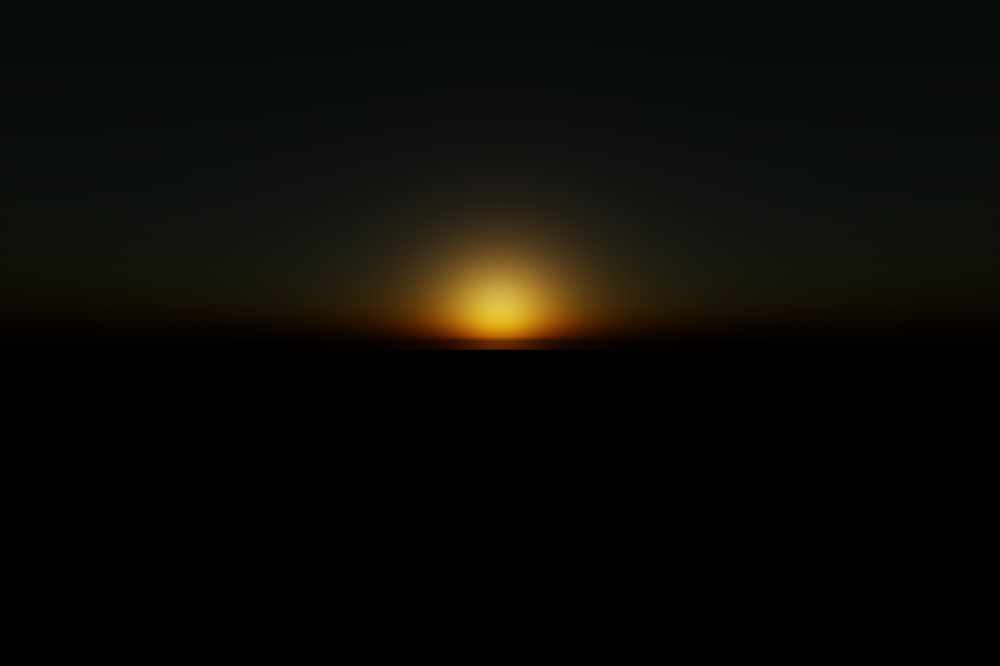
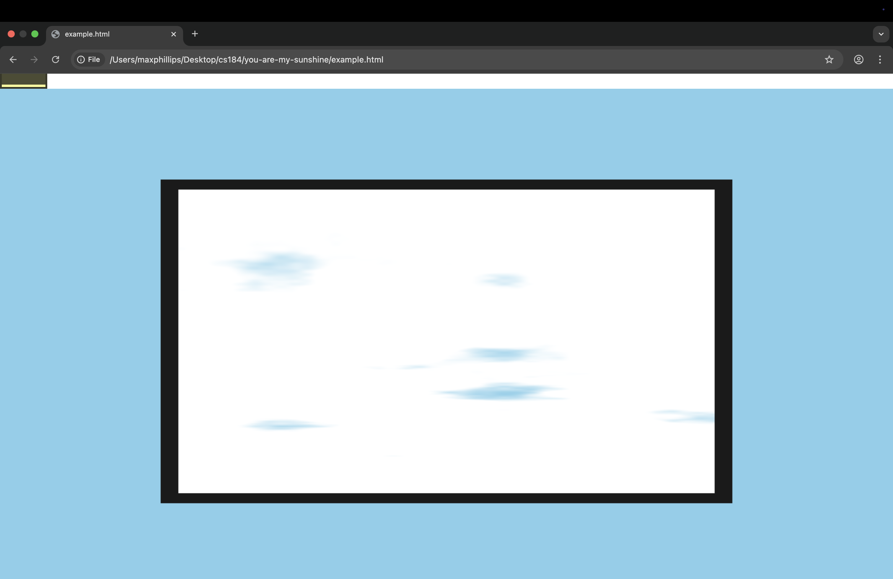
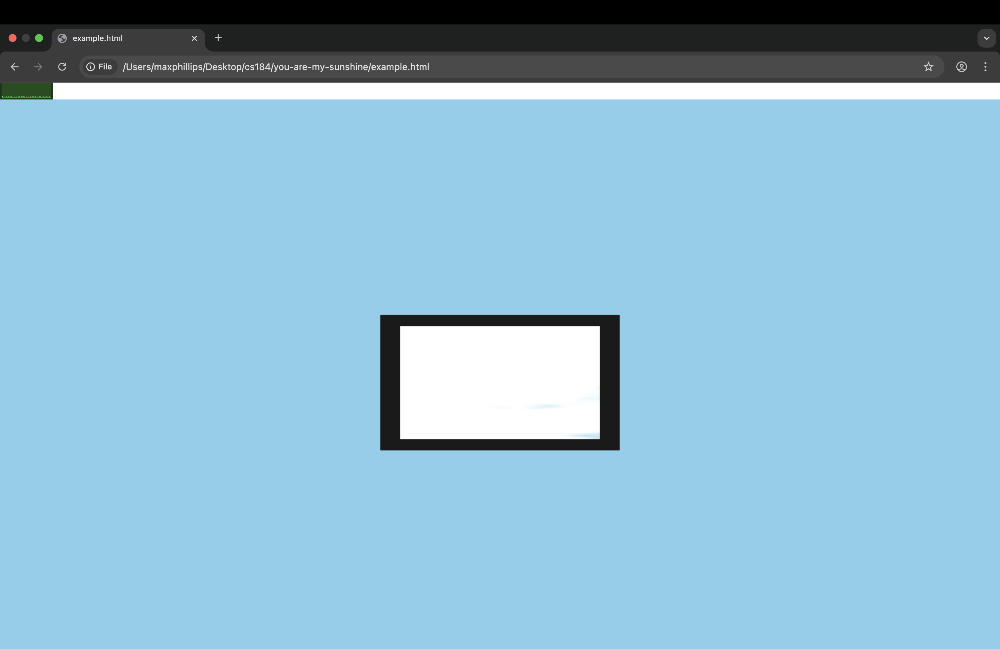
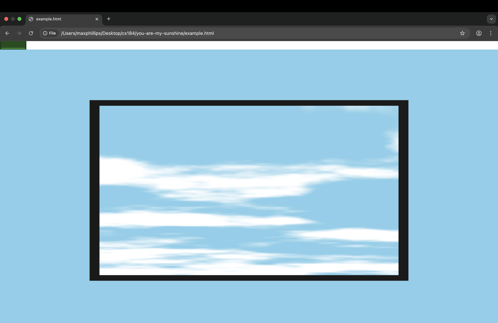
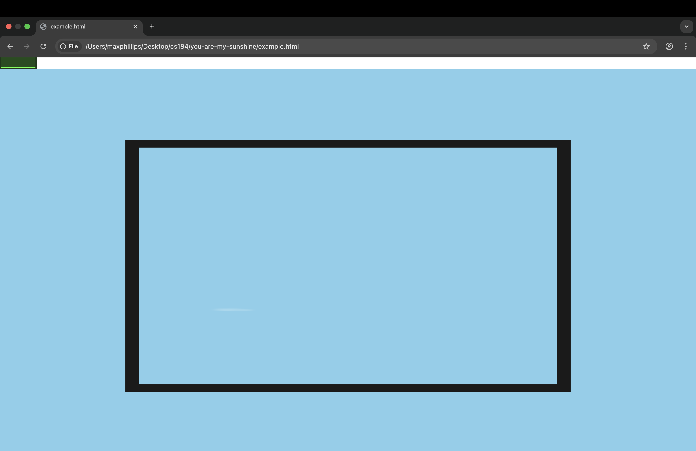
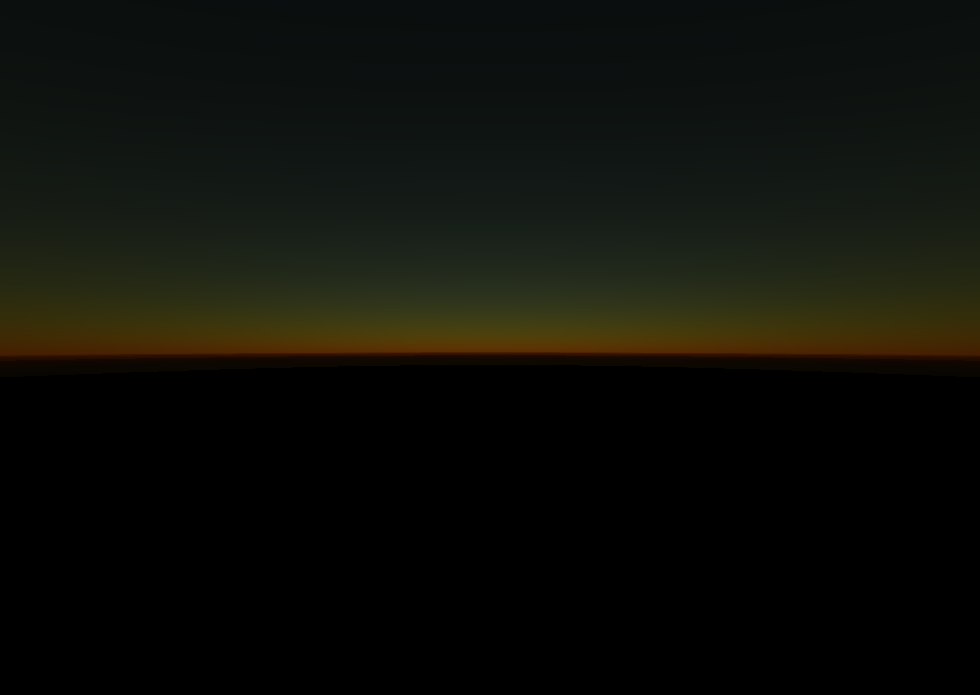
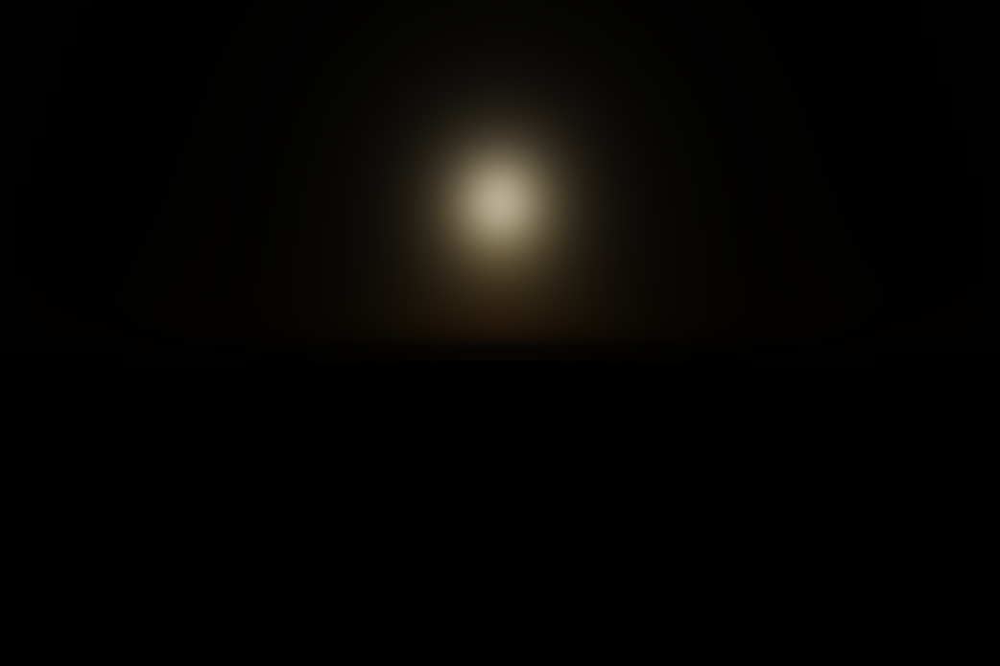
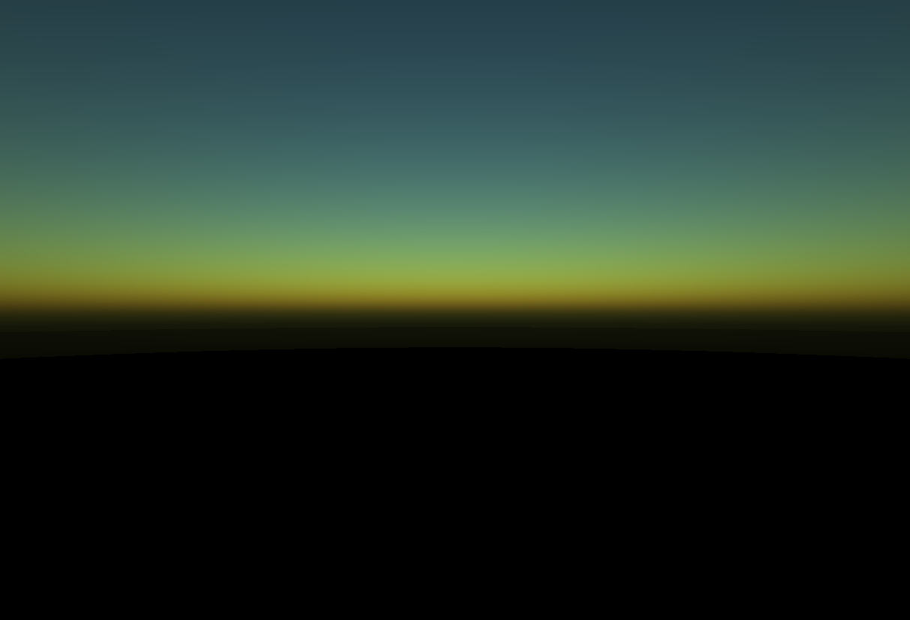
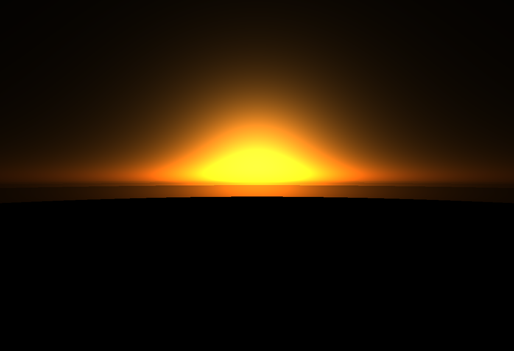
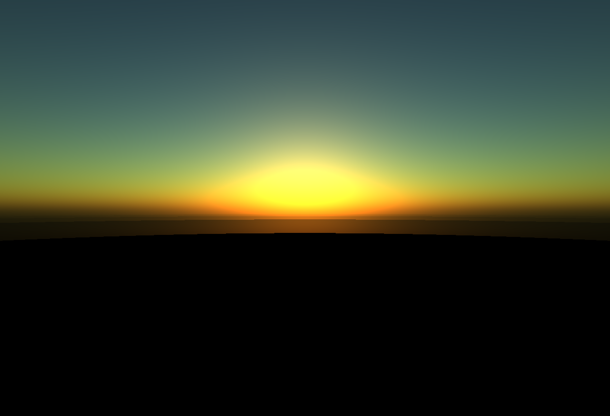

CS184/284A Spring 2025 Final Project Write-Up: You Are My Sunshine (YAMS): Realistic Sunset Rendering
Link to webpage: (TODO) cs184.eecs.berkeley.edu/sp25
Link to GitHub repository: https://github.com/kilowatt/you-are-my-sunshine
Link to Slides: https://docs.google.com/presentation/d/1nEb2LeuaO7ef6H_2uaM0hM884B5f2vRffjy2qxN-HLM/edit?usp=sharing
Link to Video: (TODO)
Abstract
We created a sunset rendering application that will allow us to simulate pretty sunsets! It calculates and simulates Rayleigh and Mie atmospheric scattering, generating physically accurate skies. We included tunable weather factors, such as temperature, humidity, and air quality, to change the scattering of sunlight through the atmosphere. We also implemented clouds and foreground objects to make our results even prettier.Technical Approach
Overview
We based our implementation of sunset and atmosphere simulation largely on Nishita (1993). We simulated the earth and atmosphere as two concentric spheres, and the sun as a light source that is infinitely far away (so that all rays are parallel).
Raymarching and Rayleigh + Mie Scattering
We implemented a ray marching algorithm that simulates both Rayleigh and Mie scattering. To estimate the radiance of a given pixel, we first project a ray from the camera to the pixel, and extend this ray out until it intersects the edge of the atmosphere. Along this camera-pixel ray, we cast secondary rays in regular intervals from the point along the camera-pixel ray in the direction of the sun. We also compute the height of the sample point to determine the local Rayleigh and Mie scattering densities.
We compute the additional optical depth along the secondary rays, and apply the Rayleigh and Mie phase functions. We combine the accumulated Rayleigh and Mie terms, and scale by the brightness of the sun. This yields the given radiance.

|
For each pixel, we wish to calculate the total luminance, which we can represent with this equation. X represents a point along the ray that we're integrating over.
$$L(P_c,P_a) = \int_{P_c}^{P_a} T(P_c, X) L_{sun}(X) ds$$
Transmittance T, representing the fraction of light that reaches between two points (doesn't get scattered away), can be calculated like so (note that we will eventually need to account for both Rayleigh and Mie scattering):
$$T(P_a, P_b) = \frac{L_a}{L_b} = \text{exp} \left\{ -\sum\limits_{P_a}^{P_b} \text{exp} ( \beta(h) ds )\right\}$$
and scattering coefficient beta, which depends on altitude h and atmospheric scale height H (a constant we can tweak), can be represented as
$$\beta_s(h) = \beta_s(0) \exp \left( -\frac{h}{H} \right)$$
which simplifies the previous transmittance equation to
$$T(P_a, P_b) = \exp \left\{ -\beta_s(0) \sum\limits_{P_a}^{P_b} \exp \left( -\frac{h}{H} \right) \right\}$$
L_sun represents the light that reaches a given point X from the sun (reduced by atmospheric scattering before it reaches the point) and is then scattered towards the camera.
$$L_{\text{sun}}(X) = \text{SunIntensity} * T(X, P_s) * P(V, L) * \beta_s(h)$$
where V is the viewing direction, L is the light/sun direction, and P is the *phase function* that defines how much light is scattered in each direction.
Finally, we need to compute the final sky color, which uses both Rayleigh and Mie scattering, which have different phase functions and scattering coefficients beta. Here's the equation for just Rayleigh scattering:
$$\text{SkyColor}_R(P_c, P_a) = \int_{P_c}^{P_a} T(P_c, X) L_{\text{sun}}(X) ds$$
$$= \text{SunIntensity} * P(V, L) \int_{P_c}^{P_a} T(P_c, X) * T(X, P_s) * \beta_s(h) ds$$
and to get the final sky color, we simply add the effects of Rayleigh and Mie.
$$\text{SkyColor}(P_c, P_a) = \text{SkyColor}_R(P_c, P_a) + \text{SkyColor}_M(P_c, P_a)$$
In our final code, we also take a few algebraic shortcuts that allow us to reduce repeated computation.
In the process of implementing our sunset simulator since the milestone, we noticed some bugs in our implementation. In our implementation of the sunset during the milestone, we saw that there would be artifacts when the sun was near the horizon, where the sun would be overly large, and light would "stick" to the sun as it moved. To fix this issue, we realized we had to normalize the color of the sun, which made the simulation look much more realistic. Below is a comparison of the two implementations:
|
|

|
It is clear that the old implementation, while vibrant and striking in color, is clearly unrealistic, while the new implementation has a much smoother, more realistic tone of the sunset.
Cloud Rendering
Our shader generates dynamic, realistic clouds using fractal Brownian motion (fBm) to create detailed, evolving noise patterns. The process begins by computing a directional ray from the camera for each pixel and checking if it intersects the Earth, such that clouds are only rendered if the view ray doesn't hit the ground.
To simulate cloud motion, a time-dependent drift is added to the noise input, and the resulting coordinates are rotated to align the cloud layer at an angle, mimicking atmospheric perspective. The fBm function, built from multiple layers of 2D value noise, produces smooth, organic variations that resemble natural cloud structures. This raw noise value is transformed into a soft cloud mask using a smoothstep threshold, which controls where clouds appear based on density.
The mask is further modulated by altitude, fading clouds out near the horizon, and is limited to a specific area on the screen to keep clouds constrained to the sky. Lighting is then applied by mixing a sunlit cloud color with the sky's atmospheric radiance, and the final cloud color is blended into the scene based on cloud opacity and solar elevation, resulting in a soft, drifting cloudscape that evolves over time.
To give the illusion of depth, we rotate the vertical plane that the clouds are on by 80 degrees into the screen, such that it gives perspective to the viewer. This was accomplished by creating a rotation matrix and projecting onto it to determine the position at which we should sample.
We also have a few tunable knobs in our cloud implementation, particularly around the density of clouds(controlled by the lower and upper bound of the inputs to the smoothstep used to calculate the cloud mask, which controls the density of the clouds). The smoothstep function is used to turn raw FBM noise - which is continuous and wavy - into discrete, cloud-like regions with soft, fuzzy edges.
We finally have 2 points to determine where the upper right and lower left bounds of the “cloudy region” is. In the final implementation, we render clouds across the entire width, and go from half way up to the top, ie, our bottom left coordinate would be (0.5, 0) and the top right coordinate would be (1, 1). We use this to only display clouds into certain locations, avoiding conflict with empty sky.
Clouds with varied box size
|

|

|
Clouds with varied cloud densities
|
|

|

|
Foreground Geometry
We also implemented rendering of foreground geometry that reflects the colors of the sky and sunset. We utilized a Lua script found online that converted .obj files to matrix of vertices in GLSL. To render the geometry onto the screen, we first defined rotation and translation matrices. We then used these to transform the coordinates of the vertices into the camera space, which are then projected into the 2D space of the screen.
To determine the contribution of each triangle to the final render, we calculated how much a given pixel lies inside a given triangle. For each pixel inside a triangle, we calculate the normal of the triangle and use it to contribute the lighting contribution based on the angle between the surface of the triangle and the light source.
The final color of the geometry was determined by mixing the reflected color of the sky and sunset with the contribution of the triangle, which allowed the geometry to reflect the natural color of the environment. We did this in two separate ways. One way was to simply sample the color of the sky once along the direction of the normal of the triangle, and use that as the color of the object. The second, more computationally intensive way was using cosine-weighted hemisphere sampling to sample multiple directions per pixel to generate a more realistic blended lighting for the geometry.
Results
Sunset Simulation (just the sunset)
Atmosphere simulation with only Rayleigh or only Mie
|

|

|
Sunset Simulation with Foreground Geometry
Sunset Simulation with Clouds
TODO: insert different clouds n shi
|

|

|

|
Temperature and Relative Humidity
Our shader renders the sky and environment based on physically accurate parameters. For example, Rayleigh scattering is the phenomenon that makes the sky appear blue, and our Rayleigh scattering coefficients are ddynamically computed depending on temperature, pressure, and relatie
Our shader generates dynamic, realistic clouds using fractal Brownian motion (fBm) to create detailed, evolving noise patterns. The process begins by computing a directional ray from the camera for each pixel and checking if it intersects the Earth, such that clouds are only rendered if the view ray doesn't hit the ground.
To simulate cloud motion, a time-dependent drift is added to the noise input, and the resulting coordinates are rotated to align the cloud layer at an angle, mimicking atmospheric perspective. The fBm function, built from multiple layers of 2D value noise, produces smooth, organic variations that resemble natural cloud structures. This raw noise value is transformed into a soft cloud mask using a smoothstep threshold, which controls where clouds appear based on density.
The mask is further modulated by altitude, fading clouds out near the horizon, and is limited to a specific area on the screen to keep clouds constrained to the sky. Lighting is then applied by mixing a sunlit cloud color with the sky's atmospheric radiance, and the final cloud color is blended into the scene based on cloud opacity and solar elevation, resulting in a soft, drifting cloudscape that evolves over time.
To give the illusion of depth, we rotate the vertical plane that the clouds are on by 80 degrees into the screen, such that it gives perspective to the viewer. This was accomplished by creating a rotation matrix and projecting onto it to determine the position at which we should sample.
We also have a few tunable knobs in our cloud implementation, particularly around the density of clouds(controlled by the lower and upper bound of the inputs to the smoothstep used to calculate the cloud mask, which controls the density of the clouds). The smoothstep function is used to turn raw FBM noise - which is continuous and wavy - into discrete, cloud-like regions with soft, fuzzy edges.
We finally have 2 points to determine where the upper right and lower left bounds of the “cloudy region” is. In the final implementation, we render clouds across the entire width, and go from half way up to the top, ie, our bottom left coordinate would be (0.5, 0) and the top right coordinate would be (1, 1). We use this to only display clouds into certain locations, avoiding conflict with empty sky.
Clouds with varied box size
|
|
|
Clouds with varied cloud densities
|
|
|
|
References
- https://www.scratchapixel.com/lessons/procedural-generation-virtual-worlds/simulating-sky/simulating-colors-of-the-sky.html
- https://thebookofshaders.com/13/
Contributions
William Li
Contributed to the project proposal and final deliverables. Debugged the sunset implementation, and responsible for implementing the foreground geometry feature of the project.
Max Phillips
Contributed to the project proposal and final deliverables. Primarily implemented the clouds on our project, both implementation and research.
Kenny Wang
Contributed to the project proposal and final deliverables. Together with Harris, implemented the core scattering functionality, debugged scattering, and provided *artistic direction*
Harris Thai
Contributed to the project proposal and final deliverables. Helped implement the Rayleigh and Mie scattering algorithms, rotated the clouds and adjusted their color, and made the scattering coefficients dynamically dependent on temperature and relative humidity.